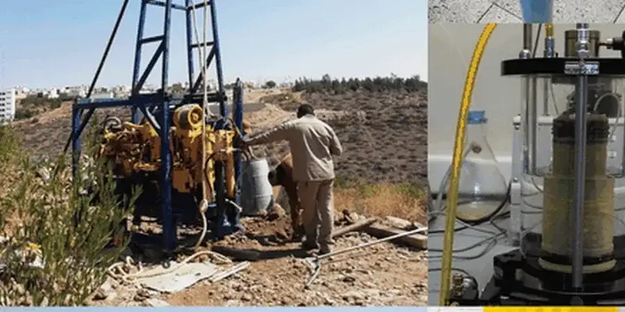

Als erfahrenes geotechnisches Ingenieurbüro bieten wir in Bremen umfassende Dienstleistungen an – von der Baugrunderkundung über die Gründungsberatung bis hin zur Baubegleitung. Unser Leistungsspektrum umfasst unter anderem die Bodenklassifikation und die Tragfähigkeitsanalyse für unterschiedlichste Bauvorhaben. Wir stellen sicher, dass alle Untersuchungen und Nachweise den aktuellen Normen entsprechen und die spezifischen Bodenverhältnisse der Hansestadt berücksichtigt werden.

Technisches Referenzbild — Bremen
Ablauf und Umfang
Der Baugrund in Bremen wird maßgeblich durch die quartären Ablagerungen der Wesermarsch geprägt. Unter einer oft mehrere Meter mächtigen Schicht aus weichen, organischen Tonen und Torfen (sogenannte „Marschböden“) folgen mitteldichte bis dichte Sande der Fluss- und Gletscherrandlagen. Diese Sande bilden häufig den tragfähigen Baugrund für Flachgründungen, während die darüber liegenden Weichschichten aufgrund ihrer hohen Zusammendrückbarkeit und geringen Scherfestigkeit besondere Herausforderungen darstellen. Der Grundwasserstand liegt in weiten Teilen Bremens sehr hoch, meist weniger als 1,5 Meter unter Geländeoberkante, und unterliegt tidalen Schwankungen der Weser. Zudem können lokal Auffüllungen aus der Nachkriegszeit sowie Geschiebemergel aus der Saale-Eiszeit angetroffen werden. Eine sorgfältige Erkundung mittels Standard-Penetration-Test und Rammsondierungen ist daher unerlässlich, um die Tragfähigkeit und das Setzungsverhalten zuverlässig zu prognostizieren.
Lokale Besonderheiten
Unser Team verfügt über langjährige, konsolidierte Erfahrung in der Region Bremen und ist mit den lokalen Bodenverhältnissen sowie den zuständigen Behörden vertraut. Wir arbeiten mit einem eigenen, kalibrierten Feldgerätepark und einem akkreditierten Erdbaulabor, sodass wir alle Untersuchungen normgerecht und effizient durchführen können. Durch die enge Zusammenarbeit mit örtlichen Bauunternehmen und Prüfingenieuren gewährleisten wir eine reibungslose Projektabwicklung und stets code-konforme Berichte.
Unsere geotechnischen Leistungen in Bremen basieren auf dem europäischen Regelwerk EC 7 (DIN EN 1997) in Verbindung mit den nationalen Anwendungsregeln (DIN 1054, DIN 4020). Für die Feld- und Laborversuche ziehen wir die einschlägigen DIN-Normen heran (z. B. DIN 18122 für Flügelscherversuche, DIN 18123 für Korngrößenanalysen). Die Klassifikation der Böden erfolgt nach DIN 18196, und bei der Bemessung von Gründungen werden die Vorgaben der DIN 4017 (Grundbruch) sowie der DIN 4019 (Setzungen) beachtet.
Fragen und Antworten
Welche besonderen Herausforderungen stellt der Baugrund in der Bremer Innenstadt?
In der Bremer Innenstadt finden sich häufig bis zu 5 m mächtige Auffüllungen aus Bauschutt und Schlacken über den natürlichen Marschböden. Diese Auffüllungen sind oft inhomogen und können organische Bestandteile enthalten. Zudem liegt der Grundwasserstand sehr hoch, was aufwändige Wasserhaltungsmaßnahmen erforderlich macht. Eine detaillierte Erkundung mittels Rammkernsondierungen und Grundwassermessstellen ist daher unerlässlich, um die Tragfähigkeit und die chemischen Eigenschaften des Bodens zuverlässig zu beurteilen.
Welche Gründungsarten werden in Bremen am häufigsten eingesetzt?
Aufgrund der weichen Marschböden werden in Bremen überwiegend Tiefgründungen wie Pfähle (z. B. Ortbeton- oder Fertigteilpfähle) ausgeführt. Bei geringeren Lasten und ausreichend tragfähigen Sandschichten in Tiefen ab etwa 4 bis 6 m kommen auch Flachgründungen mit Bodenverb.smaßnahmen (z. B. Rüttelstopfverdichtung) in Betracht. Die Wahl der Gründungsart hängt stets von der genauen Baugrundschichtung und den Bauwerkslasten ab.
Welche Normen sind für die Baugrunderkundung in Deutschland maßgebend?
In Deutschland ist die Baugrunderkundung in der DIN EN 1997-2 (EC 7-2) und der nationalen DIN 4020 geregelt. Diese Normen legen Umfang, Art und Dokumentation von Aufschlüssen (Bohrungen, Sondierungen, Schürfe) sowie die Probenahme fest. Für die Durchführung von Feldversuchen wie dem Standard-Penetration-Test (SPT) oder Rammsondierungen gelten die entsprechenden DIN-Vorschriften (DIN EN ISO 22476-3 bzw. DIN 4094).
Wie lange dauert eine typische Baugrunduntersuchung für ein Einfamilienhaus in Bremen?
Eine Baugrunduntersuchung für ein Einfamilienhaus in Bremen umfasst in der Regel zwei bis drei Kleinbohrungen bis in eine Tiefe von etwa 8 bis 10 m sowie die Entnahme von Bodenproben. Die Feldarbeiten sind meist an einem Tag abgeschlossen. Die anschließende Laboranalyse und die Erstellung des Baugrundgutachtens benötigen je nach Auslastung etwa zwei bis drei Wochen. Bei einfachen Verhältnissen kann die Bearbeitungszeit auch kürzer sein.